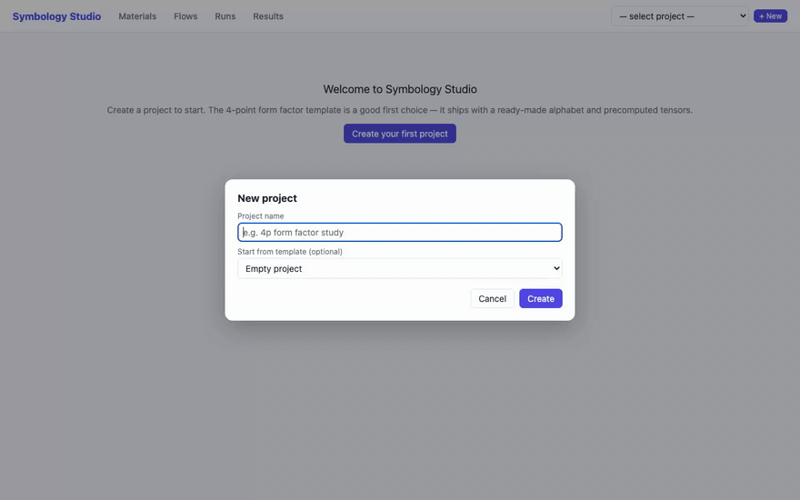
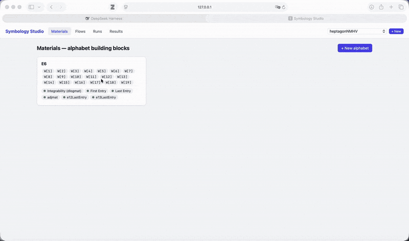
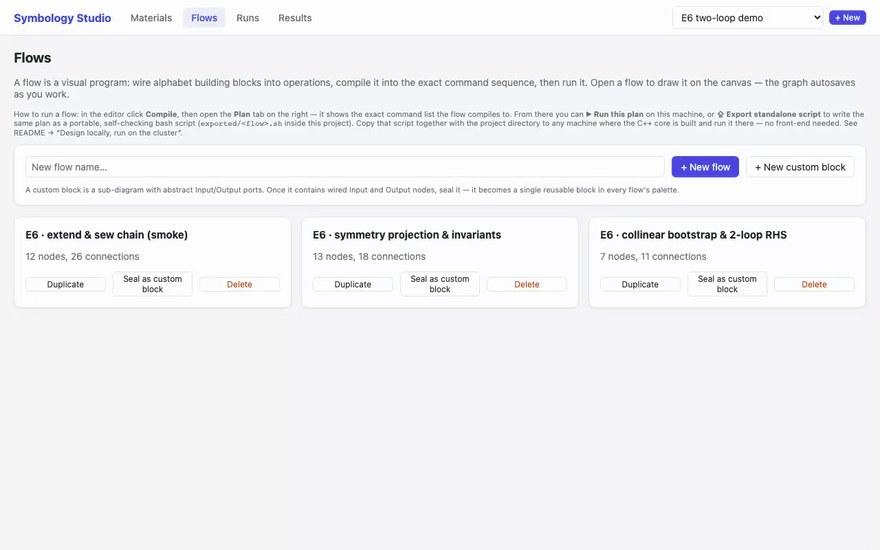
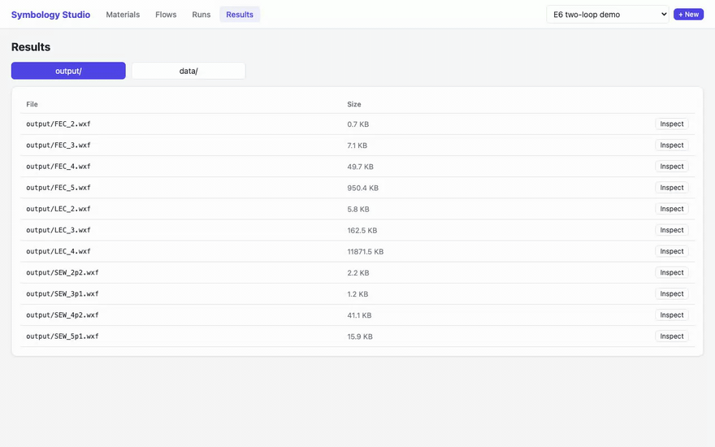
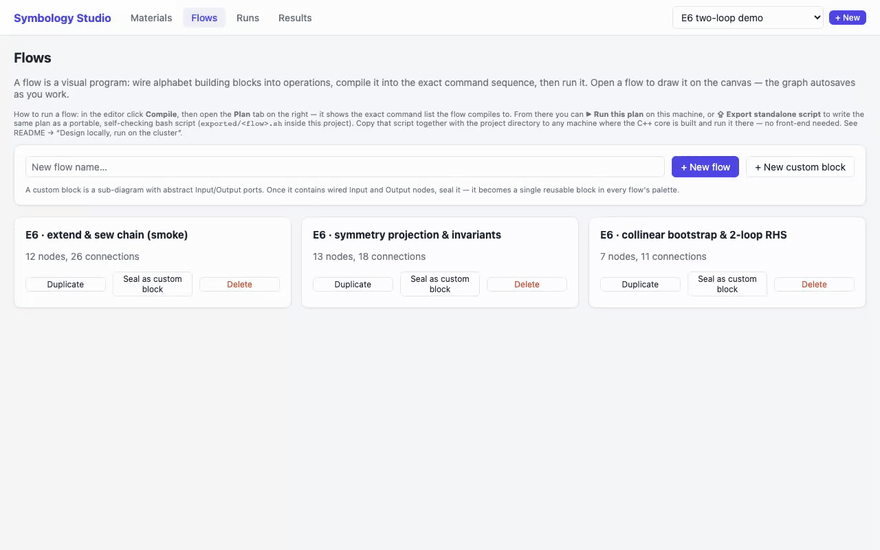

Symbology Studio — September 2026 update
Welcome to the September 2026 update of Symbology Studio. This release completes the editor's core loop — start from an example, compile a flow, run it with verification, inspect the exact tensors, and carry the whole computation to a cluster — and hardens every part of it in a ground-up robustness pass. The update closes with a big thank-you to the outside audit that drove it.
Prefer step-by-step instructions with the same demos? See the illustrated front-end guide.
Highlights
- Start from a built-in example — templates now ship with certified example flows and precomputed tensors. →
- Runs you can trust — every step executes in an isolated attempt, and results publish only after validation. →
- Inspect any tensor — dimensions, nnz, and sample entries straight from the browser. →
- Design locally, run on the cluster — a standalone script that embeds the same verification and caching as the editor. →
- 17 notable fixes — from contradiction-preserving condition export to recoverable unsaved edits. →
Projects and Materials
Start from a built-in example. The New Project dialog offers a 4-point form factor project with a ready-made 93-letter alphabet, the pentagon and E6 bootstrap examples, or an empty project. Templates copy their seed tensors into the project, so the example flows are runnable the moment the project exists.

Materials is the project's library. Alphabets live here with their letters, computed properties (integrability, first/last entry, symmetry transformations), and tensors. Properties show a Compute action while pending; everything else in the app — flows, runs, results, export — reads from this page.
Edit an alphabet and everything downstream knows. Changing an alphabet's definition marks its dependent properties stale: computable properties must be regenerated, precomputed ones must be replaced, and compilation refuses to quietly reuse a tensor that describes the old definition.
The flow editor
A real research flow in the editor. The tour below walks NMHVw4flow, a production research flow from the heptagon project: selecting a node opens its inspector on the right, and the canvas pans and zooms across graphs with dozens of nodes.

Compile before you run. The Compile button validates the graph (unique node ids, connected ports, single source per input) and renders the concrete step list in the Plan panel — each step names the binary it will invoke and every output it must produce. A step that exits zero without producing its declared outputs fails the run; "it printed no error" is not success.
Runs you can trust. Each step executes in an isolated attempt directory: inputs are snapshotted, outputs are verified non-empty, inputs that changed mid-step abort publication, and validated files replace the old ones atomically with rollback. A step is skipped only when its outputs and a SHA-256 fingerprint of every input — including the binaries — still match, so editing anything upstream recomputes exactly the affected chain.

Live logs that survive reconnects. The run page streams step events
and full logs with numbered events and a reconnect cursor; a dropped
connection resumes where it left off, and older events always remain in
the saved runs/<id>.log. Finished runs survive server restarts, and
records interrupted by a restart are marked failed instead of hanging in
"running" forever.
One run per project. A second run on the same project is refused with a clear message instead of racing on output files. The same lock covers exported scripts, so a cluster script and the editor cannot corrupt each other's caches on the same machine.
Results
Inspect any tensor. The Results page lists every tensor in
output/ and data/ with its size; Inspect loads dimensions,
non-zero count, and a sample of entries. It is the quickest sanity check
before building on a tensor — the recording shows the E6 FEC_2 seed
inspecting to 28 × 7 × 42 with 91 non-zero entries.

Design locally, run on the cluster
Standalone scripts with the editor's guarantees. ⇪ Export
standalone script writes exported/<flow>.sh — a Bash script that
embeds the exact staging, fingerprinting and verification code the local
runner uses, with the compiled plan as data rather than shell code. It
needs Bash and Python (no front-end dependencies, no Mathematica when
the Wolfram-dependent tensors are already in the project), accepts
paths with spaces and apostrophes, and relocates cleanly after you copy
the project directory to another machine.

Script settings. Environment variables control a run:
| Setting | Behavior |
|---|---|
SYMBOLOGY_ROOT |
Repository with the built C++ core. |
PROJ_DIR |
Project directory (defaults to the script's ..). |
STEPS |
Run a subset, e.g. 3,5-9. |
STEP_TIMEOUT |
Per-step watchdog in seconds (0 = off). |
WOLFRAM_MODE |
auto/skip/fail — how Wolfram steps behave when Mathematica is absent; content digests must still match. |
PYTHON / WOLFRAMSCRIPT |
Override those executables. |
Notable fixes
- Contradictions survive condition export. An inconsistent system
(
0 = nonzero) exported and reimported as solvable no longer can: contradictory rows are preserved through export, and reimport fails. - Cached results are content-checked. Truncated or damaged outputs, changed inputs inside data directories, and rebuilt binaries all invalidate the cache now — file existence alone proves nothing.
- The FEC chain resumes correctly. Advancing from two to three loops over a partially cached directory no longer extends from a stale predecessor tensor.
- Malformed WXF can't crash the readers. The WXF decoder is bounds-checked end to end; seventeen previously crashing malformed inputs now produce readable errors, verified with sanitizer builds and a mutation corpus.
- Unsaved edits are recoverable. Autosave is serialized per flow, saves are revision-checked (a stale tab gets HTTP 409, not a overwrite), pending edits survive navigation in session storage, and a failed save offers Download draft / Reload saved flow.
- One error report per error. A failed network request can no longer recurse the error reporter twenty-one times.
- The symmetry wrapper is mathematically correct. Appended-column pivots are no longer mistaken for proofs that a transformation does not exist, and empty invariant spaces produce valid zero-row tensors.
- The shipped examples are certified. Pentagon and 4p form factor flows now solve their conditions on the unrestricted word basis before imposing symmetry — 76 and 689 independent invariant symbols, each certified complete by an independent modular rank calculation.
- Numeric inputs are parsed strictly.
2junk,1.5,1/0and friends are rejected with an error instead of silently meaning2,1, or0.
…plus graph validation on save, startup reconciliation of interrupted runs, per-port connection checks, Windows device-name-safe project names, narrow-screen layouts, and a Windows launcher that reports failures instead of vanishing.
Engineering
- The public regression suites (
make check-public) run in CI on a pinned FLINT 3 / GCC 14 toolchain, with an AddressSanitizer job for the WXF readers and a native-Windows editor job. - The server runs on stock Python 3.9 again (macOS's default), and CI enforces the 3.9 floor on every push.
- The full audit trail is published as documentation in
docs/, and the CRC32 baselines moved next to the
regression tooling in
tests/baselines/.
Thank you
This release was shaped by an external robustness audit — thirteen
findings, four of them rated critical, each with a reproduction and a
regression test in tests/. The audit reports are archived in
docs/. Thank you for making the product better.